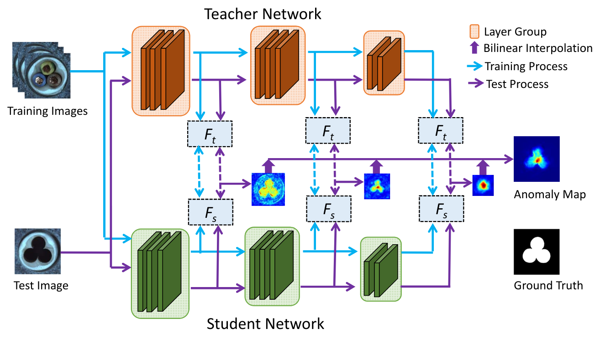
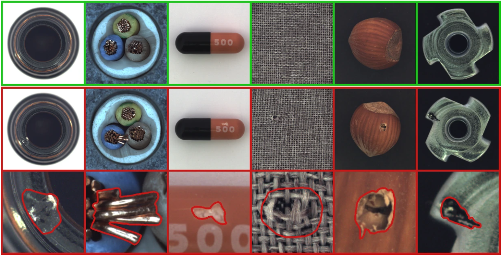

Distillation de connaissances pour la détection d’anomalies non supervisée#
Ce notebook met en pratique la distillation de connaissances pour la détection d’anomalies non supervisée.
On s’inspire de l’article Student-Teacher Feature Pyramid Matching for Anomaly Detection et de son code associé. La figure ci-dessous, tirée de l’article, illustre le fonctionnement de la méthode :

Choix du backbone et du dataset#
Backbone et fonction de perte#
L’article utilise ResNet18 comme architecture de réseau, avec le modèle teacher pré-entraîné sur ImageNet. Le student utilise la même architecture, mais son réseau est initialisé aléatoirement.
Comme illustré dans la figure ci-dessus, la fonction de perte est calculée sur les sorties des 3 premiers groupes de couches de ResNet18. Un groupe de couches correspond à l’ensemble des couches opérant à la même résolution d’image. Le réseau student est donc entraîné à reproduire les feature maps du réseau teacher uniquement sur ces 3 sorties. Le score d’anomalie est également calculé sur ces sorties.
La fonction de perte utilisée est simplement le loss MSE, que nous avons vu précédemment. Ce loss est calculé sur chaque feature map, puis sommés pour obtenir le loss total.
Jeu de données#
Le jeu de données utilisé dans l’article est MVTEC AD. Il contient 15 catégories, dont 10 objets et 5 textures. Chaque catégorie comprend environ 350 images sans défauts pour l’entraînement et une centaine d’images défectueuses pour le test.
Voici un aperçu des images du jeu de données :

Vous pouvez télécharger le jeu de données ici. Pour notre implémentation, nous utiliserons la catégorie hazelnut (noisette).
Implémentation avec PyTorch et timm#
Certaines fonctions sont un peu complexes et ne sont pas indispensables à comprendre pour saisir le concept (chargement du jeu de données, etc.). Pour plus de clarté, ces fonctions et classes ont été déplacées dans le fichier utils.py, que vous pouvez consulter si besoin.
import matplotlib.pyplot as plt
from utils import MVTecDataset,cal_anomaly_maps
import torch
import torch.nn as nn
import timm
import torch.nn.functional as F
import numpy as np
device = torch.device("cuda" if torch.cuda.is_available() else "cpu")
/home/aquilae/anaconda3/envs/dev/lib/python3.11/site-packages/tqdm/auto.py:21: TqdmWarning: IProgress not found. Please update jupyter and ipywidgets. See https://ipywidgets.readthedocs.io/en/stable/user_install.html
from .autonotebook import tqdm as notebook_tqdm
Jeu de données#
Commençons par charger le jeu de données et jetons un coup d’œil à son contenu. Cette fois, nous allons vraiment séparer l’entraînement en deux parties : entraînement et validation, afin de pouvoir évaluer le modèle pendant l’entraînement.
train_dataset = MVTecDataset(root_dir="../data/mvtec/hazelnut/train/good",resize_shape=[256,256],phase='train')
test_dataset = MVTecDataset(root_dir="../data/mvtec/hazelnut/test/",resize_shape=[256,256],phase='test')
print("taille du dataset d'entrainement : ",len(train_dataset))
print("taille du dataset de test : ",len(test_dataset))
print("taille d'une image : ",train_dataset[0]['imageBase'].shape)
# Séparation du dataset d'entrainement en train et validation
img_nums = len(train_dataset)
valid_num = int(img_nums * 0.2)
train_num = img_nums - valid_num
train_data, val_data = torch.utils.data.random_split(train_dataset, [train_num, valid_num])
# Création des dataloaders
train_loader=torch.utils.data.DataLoader(train_data, batch_size=4, shuffle=True)
val_loader=torch.utils.data.DataLoader(val_data, batch_size=4, shuffle=True)
test_loader=torch.utils.data.DataLoader(test_dataset, batch_size=1, shuffle=False)
taille du dataset d'entrainement : 391
taille du dataset de test : 110
taille d'une image : (3, 256, 256)
On peut visualiser quelques défauts :
num_defects_displayed = 0
fig, axes = plt.subplots(2, 2, figsize=(5, 5))
for sample in test_loader:
image = sample['imageBase']
has_defect = sample['has_anomaly']
if has_defect:
row = num_defects_displayed // 2
col = num_defects_displayed % 2
axes[row, col].imshow(image.squeeze().permute(1, 2, 0).numpy())
axes[row, col].axis('off')
num_defects_displayed += 1
if num_defects_displayed == 4:
break
plt.tight_layout()
plt.show()
Création des modèles teacher et student#
Pour nos modèles, nous allons utiliser la même classe et spécifier les particularités de chaque modèle en paramètre. Pour faciliter l’utilisation d’un backbone déjà existant, nous utilisons la bibliothèque timm (PyTorch Image Models). C’est une bibliothèque très intéressante pour accéder à des backbones et des modèles déjà entraînés. Elle offre également une certaine flexibilité pour manipuler le réseau.
class resnet18timm(nn.Module):
def __init__(self,backbone_name="resnet18",out_indices=[1,2,3],pretrained=True):
super(resnet18timm, self).__init__()
# Features only permet permet de ne récupérer que les features et pas la sortie du réseau, out_indices permet de choisir les couches à récupérer
self.feature_extractor = timm.create_model(backbone_name,pretrained=pretrained,features_only=True,out_indices=out_indices)
if pretrained:
# Si le modèle est pré-entrainé (donc c'est le teacher), on gèle les poids
self.feature_extractor.eval()
for param in self.feature_extractor.parameters():
param.requires_grad = False
def forward(self, x):
features = self.feature_extractor(x)
return features
On peut maintenant créer notre teacher et notre student :
student=resnet18timm(backbone_name="resnet18",out_indices=[1,2,3],pretrained=False).to(device)
teacher=resnet18timm(backbone_name="resnet18",out_indices=[1,2,3],pretrained=True).to(device)
Fonction de perte#
La fonction de perte utilise la distance euclidienne (MSE), définie comme suit : \(D(I_1, I_2) = \sqrt{\sum_{i=1}^{m} \sum_{j=1}^{n} \left( I_1(i,j) - I_2(i,j) \right)^2}\) où \(I_1\) et \(I_2\) sont nos deux images.
Notre implémentation de la perte utilise cette distance pour comparer les feature maps entre elles pour les 3 paires de feature maps :
class loss_kdad:
def __init__(self):
pass
# fs_list : liste des features du student et ft_list : liste des features du teacher
def __call__(self,fs_list, ft_list):
t_loss = 0
N = len(fs_list)
for i in range(N):
fs = fs_list[i]
ft = ft_list[i]
_, _, h, w = fs.shape
# Normaliser les features améliore les résultats
fs_norm = F.normalize(fs, p=2)
ft_norm = F.normalize(ft, p=2)
# Calcul de la distance euclidienne
f_loss = 0.5 * (ft_norm - fs_norm) ** 2
# On prend la moyenne de la loss sur tous les pixels
f_loss = f_loss.sum() / (h * w)
t_loss += f_loss
return t_loss / N
Entraînement du modèle#
Définissons nos hyperparamètres :
epochs= 20
lr=0.0004
criterion = loss_kdad()
optimizer = torch.optim.Adam(student.parameters(), lr=lr)
Il est temps d’entraîner le modèle ! L’entraînement peut prendre un certain temps.
for epoch in range(epochs):
student.train()
train_loss = 0.0
for data in train_loader:
image = data['imageBase'].to(device)
optimizer.zero_grad()
outputs_student = student(image)
outputs_teacher = teacher(image)
loss = criterion(outputs_student,outputs_teacher)
loss.backward()
optimizer.step()
train_loss += loss.item()
student.eval()
val_loss = 0.0
for data in val_loader:
image = data['imageBase'].to(device)
outputs_student = student(image)
outputs_teacher = teacher(image)
loss = criterion(outputs_student,outputs_teacher)
val_loss += loss.item()
print("Epoch {} - train loss : {} - val loss : {}".format(epoch,train_loss/len(train_loader),val_loss/len(val_loader)))
Epoch 0 - train loss : 1.6731480107277255 - val loss : 1.3833315640687942
Epoch 1 - train loss : 0.8773692731238618 - val loss : 0.7371394574642182
Epoch 2 - train loss : 0.5567233881241158 - val loss : 0.5115290269255638
Epoch 3 - train loss : 0.4170471341172351 - val loss : 0.4163943402469158
Epoch 4 - train loss : 0.33714089627507365 - val loss : 0.3523293524980545
Epoch 5 - train loss : 0.29374887162371527 - val loss : 0.28786116763949393
Epoch 6 - train loss : 0.2577011583349373 - val loss : 0.2747397504746914
Epoch 7 - train loss : 0.2373752082827725 - val loss : 0.22077917009592057
Epoch 8 - train loss : 0.21801123603046696 - val loss : 0.2255100306123495
Epoch 9 - train loss : 0.2012799475577813 - val loss : 0.19499738812446593
Epoch 10 - train loss : 0.1874875887473927 - val loss : 0.20737174898386002
Epoch 11 - train loss : 0.17415884736029408 - val loss : 0.254209216684103
Epoch 12 - train loss : 0.16137944416532032 - val loss : 0.15532575249671937
Epoch 13 - train loss : 0.14706034665998025 - val loss : 0.1503308217972517
Epoch 14 - train loss : 0.13900368472066107 - val loss : 0.14076187387108802
Epoch 15 - train loss : 0.1303630452367324 - val loss : 0.12805806174874307
Epoch 16 - train loss : 0.1270840932862668 - val loss : 0.3456251971423626
Epoch 17 - train loss : 0.1299520534333549 - val loss : 0.12075391858816147
Epoch 18 - train loss : 0.11812143749262713 - val loss : 0.11526557803153992
Epoch 19 - train loss : 0.1135895169233974 - val loss : 0.11893145311623812
On peut maintenant évaluer notre modèle. Pour cela, nous utilisons la mesure AUROC (voir cours 9 pour un rappel).
scores = []
test_imgs = []
gt_list = []
for sample in test_loader:
label=sample['has_anomaly']
image = sample['imageBase'].to(device)
test_imgs.extend(image.cpu())
gt_list.extend(label.cpu().numpy())
with torch.set_grad_enabled(False):
outputs_student = student(image)
outputs_teacher = teacher(image)
# La fonction cal_anomaly_maps permet de calculer la carte d'anomalie (ça sera utile pour la visualisation après)
score =cal_anomaly_maps(outputs_student,outputs_teacher,256)
scores.append(score)
scores = np.asarray(scores)
gt_list = np.asarray(gt_list)
from sklearn.metrics import roc_auc_score
map_scores = np.asarray(scores)
max_anomaly_score = map_scores.max()
min_anomaly_score = map_scores.min()
map_scores = (map_scores - min_anomaly_score) / (max_anomaly_score - min_anomaly_score)
img_scores = map_scores.reshape(map_scores.shape[0], -1).max(axis=1)
gt_list = np.asarray(gt_list)
img_roc_auc = roc_auc_score(gt_list, img_scores)
print(" image hazelnut ROCAUC : %.3f" % (img_roc_auc))
image hazelnut ROCAUC : 0.990
On obtient un très bon AUROC, notre modèle est très bon pour détecter les défauts sur les noisettes.
Visualisation de la carte d’anomalies#
Pour calculer le score, nous avons comparé les feature maps du teacher à celles du student sur les 3 sorties (de dimensions différentes). À l’aide de la fonction cal_anomaly_maps, nous avons effectué les comparaisons et reconstruit une carte d’anomalie de la taille de l’image de base. On peut visualiser cette carte d’anomalie pour obtenir une localisation du défaut.
fig, axs = plt.subplots(2, 2, figsize=(5, 5))
for i,(img,mask) in enumerate(zip(test_imgs,scores)):
img_act=img.squeeze().permute(1, 2, 0).numpy()
row = i // 2
col = i % 2
axs[row, col].imshow(img_act)
axs[row, col].imshow(mask, cmap='jet', alpha=0.5)
axs[row, col].axis('off')
if i==3:
break
plt.tight_layout()
plt.show()

On constate que la localisation est assez précise, bien que ce ne soit pas le but premier de notre modèle.